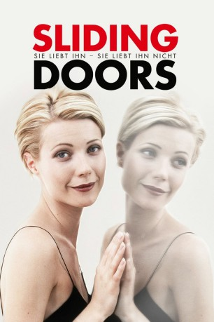

#10715 Sie liebt ihn - sie liebt ihn nicht
Alternativ: Sliding Doors (Englischer Titel)
 
 IMDB-Wertung: 6.8 / 10
IMDB-Wertung: 6.8 / 10  Metascore: 59
Metascore: 59 
Gerade hat Helen ihren Job bei einer Londoner PR-Agentur verloren und will nur schnellstmöglich nach Hause. Doch dann verpasst sie knapp ihre U-Bahn und wird bei einem Überfall verletzt. Aber wie wäre Helens Leben verlaufen, wenn sie genau diesen Zug noch erwischt hätte? Vielleicht hätte sie den charmanten James kennengelernt. Vielleicht hätte Sie ihren Freund Gerry in flagranti mit einer Anderen ertappt .... Was wäre, wenn ein kleiner Moment über das Schicksal entscheidet?
Jahr: 1998
Dauer: 98 Minuten
FSK: 6
Land: England Studio: Capelight PicturesTonspuren:
Untertitel: Deutsch,
Auflösung: 1080p (1920x1080) Größe: 7833 MB
Genre: Drama, Komödie, Fantasy, Liebe
Regisseur: Peter Howitt
Drehbuch: Peter Howitt
Soundtrack: David Hirschfelder
Darsteller:
 Gwyneth Paltrow als Helen
Gwyneth Paltrow als Helen John Hannah als James
John Hannah als James John Lynch als Gerry
John Lynch als Gerry Jeanne Tripplehorn als Lydia
Jeanne Tripplehorn als Lydia- Zara Turner als Anna
 Nina Young als Claudia
Nina Young als Claudia- Virginia McKenna als James's Mother
 Kevin McNally als Paul
Kevin McNally als Paul- Peter Howitt als Cheeky Bloke
- Neil Stuke als Defensive Bloke
 Christopher Villiers als Steve
Christopher Villiers als Steve- Carlton Jarvis als Anaesthetist (uncredited)
- Barry Lee-Thomas als Local MP (uncredited)
- Vivienne Soan als Nurse (uncredited)
- Douglas McFerran als Russell
- Paul Brightwell als Clive
- Terry English als Kind Cabbie
- Paul Stacey als Man on Tube
- Joanna Roth als Suspicious Girl
- Theresa Kartell als Rachael
- Evelyn Duah als Receptionist
- Linda Broughton als Theatre Nurse
- Charlotte Fryer als Doctor
- Pip Miller als Consultant
- Merryn Jones als Mother
- Ella Jones als Child
- Julie McDowell als Concerned Diner
- David Burrows-Sutcliffe als Bob (uncredited)
- Jeremy Caleb Johnson als Restaurant Patron (uncredited)
- Tim Packham als James' Colleague exiting cafe (uncredited)
- Alex Reid als Waiter (uncredited)
Datei: X:\1998\Sie liebt ihn - sie liebt ihn nicht (1998, FSK6, 1920x1080).mkv seit 22.02.2019
Festplatte: Gemischt-01+Anime
 Es gibt insgesamt 86 Filme in der Gruppe '1998'
Es gibt insgesamt 86 Filme in der Gruppe '1998'